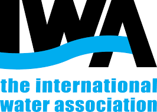
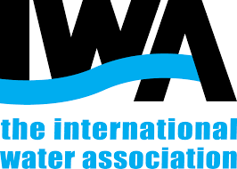
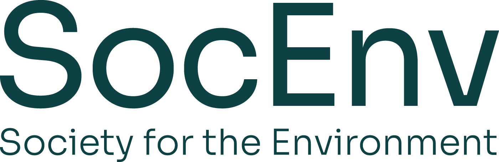
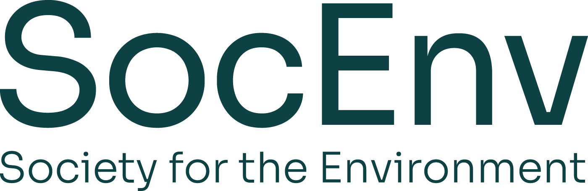

There is still time to watch the Residual Chlorination Debate recording, participate in the debate & vote:
Residual chlorine: life-saving defender of public health, or dangerous chemical additive with carcinogenic by-products? Join the debate as we ask whether more countries should follow in the footsteps of the Netherlands, and stop dosing residual chlorine.
The debate covers:
- a brief explanation of why residual chlorine/chloramine is traditionally used to maintain disinfection to the point of use,
- and a reminder of the issues with disinfection by-products.
- Jan Vreeburg's explanation of why and how the use of chlorine was discontinued in the Netherlands,
- followed by the main debate with Jeni Colbourne on the applicability of this methodology in other regions.
- Together we’ll explore the many advantages and disadvantages of each approach.
- We'll also hear first hand accounts of how network water quality is maintained in other countries.
Live Speakers:
Jeni Colbourne
Former Chief Inspector of Drinking Water for England & Wales, will be making the case for residual chlorination/chloramination
...read more about Jeni
Professor Jeni Colbourne MBE PhD BSC (Hons) FIMLS, FIWEM, MIBIOL's career spanned 28 years in the water industry followed by 12 years as the Chief Inspector of Drinking Water England and Wales. Her undergraduate degree was medical and environmental microbiology with biochemistry and physiology.
Jeni's PhD was The presence and significance of Pseudomonas aeruginosa in London’s drinking water supply. Much of her research has been about the growth of organisms in water distribution systems and much of her career has been spent dealing with the water related aspects of public health outbreak control (legionella, cryptosporidium) and disaster management (earthquakes, floods, bombs, terrorism).
Jeni's visiting professorship since 1998 has been at Surrey University, where she became emeritus last year.
Notable activities include leading for the UK in the introduction of Drinking Water Safety Plans (2004 WHO Drinking Water Guidelines) and the introduction of water safety planning and risk based approach into the European Drinking Water Directive and into UK water law.
Jan Vreeburg
Principal Scientist, KWR will be making the case for chlorine-free, self-cleaning networks.
...read more about Jan
Dr. Jan Vreeburg is Principal Scientist in the field of Water Infrastructure.
Jan has a long history of research and development in the field of drinking water distribution infrastructure, and in implementing the results of this work in practice. He was, for instance, one of the fathers of the method for Reliability Assessment of drinking water supply, which is today embedded in the Drinking Water Act.
Jan also developed the concept of self-cleaning distribution networks, which in 2007 was the subject of his PhD thesis at TU Delft; the same university where, 20 years earlier, he earned his MSc in Civil Engineering.
Besides his work at KWR, Jan was earlier associated with TU Delft (2001-2012), where he set up the Drinking Water Infrastructure curriculum and also supervised a number of doctoral students. The concrete results of these activities include the SIMDEUM model" and the Tap Water Sprinkler.
During 2012-2017, alongside his activities at KWR, Jan was associate professor at the Wageningen University, where he set up the curriculum for Urban Environmental Infrastructures, which brought together and integrated all the urban utility service infrastructures.
Martin Currie
Water Quality Consultant & Trainer, Aqueum will be moderating the debate, and posing your questions to our experts.
...read more about Martin
Dr Martin Currie is an independent potable water quality and treatment specialist with Aqueum. He founded andeye at the start of the COVID-19 pandemic, in order to improve the quality of online conferences and help decarbonise and democratise conferences post-COVID. andeye are based just south Glasgow and are providing the platform for this discussion.
Martin lived in Mauritius prior to his return to Scotland, working as an independent water consultant and photographer. Prior to that he lead Atkins’ Middle East Water business from a Dubai base. This included taking the water lead on a number of sustainable city master plans. After a year of consultancy, following his PhD in water treatment, his first long-term role was as a Process Engineer with Thames Water, culminating in the Lead Process Engineer role on their Upper Thames Major Resource Development project.
Video Contributors:
Joby Boxall
Professor Joby Boxall of the University of Sheffield will be introducing the 'To Chlorinate, or Not to Chlorinate?' collaboration
...read more about Joby
Joby Boxall is Professor of Water Infrastructure Engineering at the University of Sheffield, he was Head of Department of Civil and Structural Engineering 2017-21. He is a Chartered Engineer and Environmentalist and Fellow of the Chartered Institution of Water and Environmental Management. Joby's research interests are concerned with understanding and modelling hydraulic, water quality and infrastructure performance and interactions. He is focused on research addressing the grand challenges facing water, including leading the EPSRC grand challenge consortium on sustainable clean water for all, TWENTY65.
Ray McMillan
Ray McMillan, Head of Regulatory at Taumata Arowai, will be telling us about drinking water reforms which make this debate particularly pertinent in New Zealand
...read more about Ray
After serving 10 years in the Royal New Zealand Navy, Ray began his public service career as a barrister and solicitor before developing his skills as a maritime investigator at Maritime NZ. Ray then went on to gain significant experience in developing and leading regulatory teams at the Environmental Protection Authority and Waka Kōtahi. Through his career Ray has gained experience across the full spectrum of regulatory activities from policy setting, carrying out frontline activities through to prosecutions. He says his background in law has provided him with foundational and transferable skills that he applies daily in his role.
 Jim Graham
Jim Graham
Jim Graham, Principal Advisor - Drinking Water at Taumata Arowai will be explaining New Zealand's residual disinfection exemption process.
...read more about Jim
Jim has worked in the water sector for 30 years, initially as a Health Protection Officer and Drinking Water Assessor before joining the Ministry of Health in 2005 to lead the $150M Drinking Water Assistance Programme and assist with the preparation of drinking water standards. Nine years as a Principal Environmental Scientist with Opus International Consultants assisting drinking water suppliers manage risk followed before he was Principal Water Quality Advisor with Water New Zealand.
Following this debate, you will understand the importance of controlling pathogens in the network and the need for either:
- network chlorine/chloramine residuals, or
- tight treatment to remove organics followed by rigorous maintenance of self-cleaning networks.
Brought to you by:
 


 
